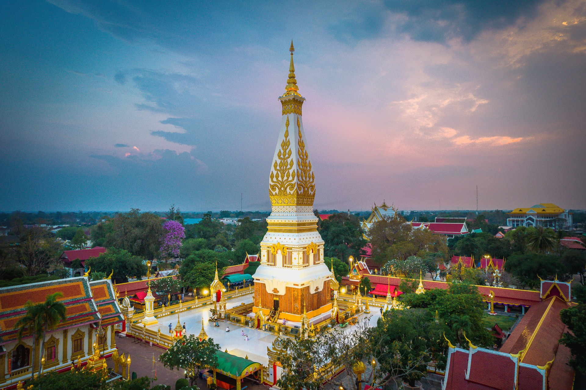
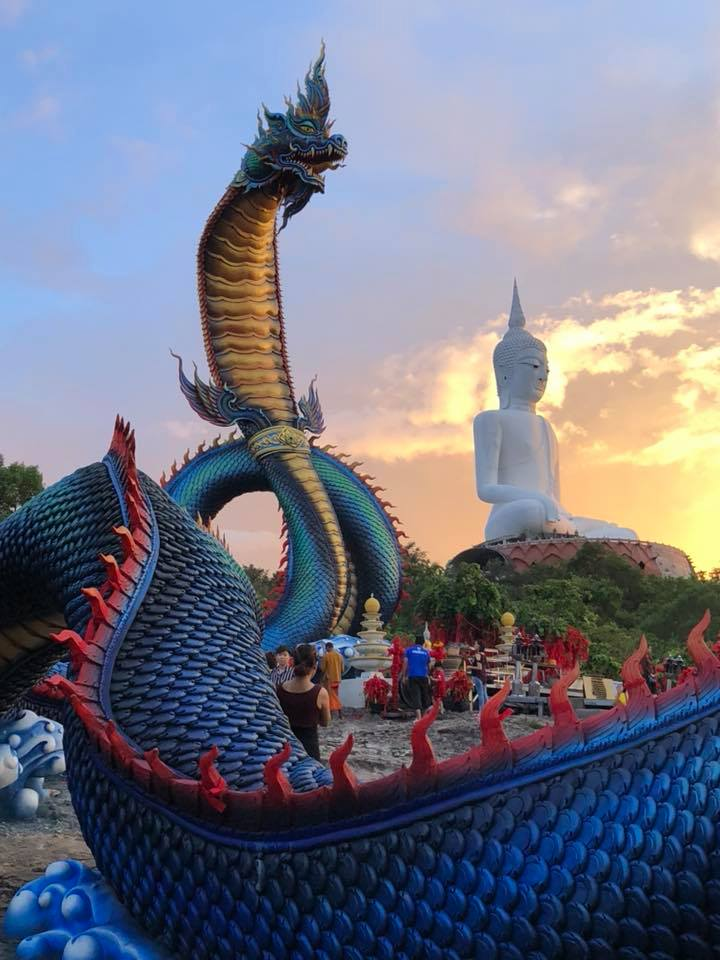
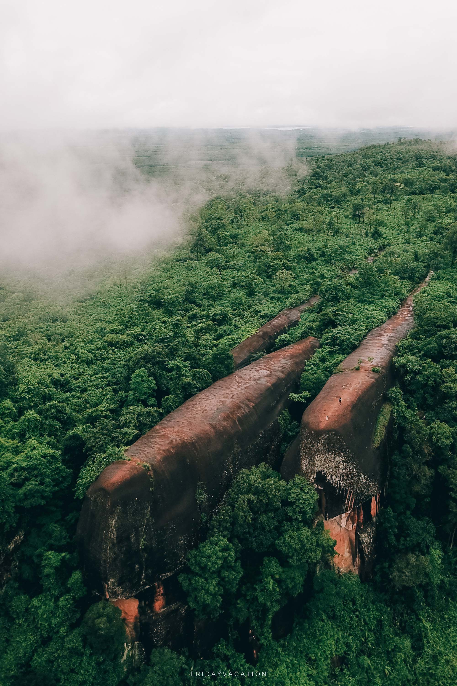

วัดพระธาตุพนมวรมหาวิหาร พระธาตุประจำปีเกิดของปีวอกและผู้ที่เกิดวันอาทิตย์ ภายในองค์พระธาตุบรรจุพระอุรังคธาตุของพระสัมมาสัมพุทธเจ้าไว้ ลักษณะของสถาปัตยกรรมมีแหล่งที่มาที่เดียวกันกับปราสาทของขอมและได้ทำการบูรณะเรื่อยมา พระธาตุพนมไม่เพียงแต่เป็นศูนย์รวมจิตใจของชาวนครพนมเท่านั้นยังเป็นที่เคารพของ ชาวไทยภาคอื่น และชาวลาวอีกด้วย ว่ากันว่าถ้าใครได้มานมัสการพระธาตุครบ 7 ครั้ง จะถือว่าเป็น “ลูกพระธาตุ”
เพิ่มเติมวัดภูมโนรมย์ หรือ วัดรอยพระพุทธบาทภูมโนรมย์ อยู่ห่างจากตัวเมืองมุกดาหารประมาณ 5 กม. มีเนื้อที่ประมาณ 100 ไร่ อยู่ในเขตพื้นที่ของอุทยานแห่งชาติมุกดาหาร มีพืชพันธ์ไม้หายากหลายชนิด เช่น ต้นช้างน้าว ผัหวาน ที่ในอดีต ชาวบ้านแถบนั้นจะขึ้นภูเก็บผักหวานกัน อยู่ในเขตอำเภอเมืองมุกดาหาร เป็นภูเขาที่มีความไม่สูงมากนัก มีพืชพันธุ์ไม้หลายชนิดที่หายาก เช่น ต้นช้างน้าว ดอกไม้ประจำจังหวัด ผักหวาน นอกจากนั้นยังเป็นที่ตั้งวัดรอยพระพุทธบาทภูมโนรมย์ เป็นวัดเก่า
เพิ่มเติม
เที่ยวร้อยเอ็ด ต่อไปนี้เรียกได้ว่าเป็นแลนด์มาร์คของร้อยเอ็ดเลยค่ะ เป็นอีกหนึ่ง สถานที่ท่องเที่ยวร้อยเอ็ด ที่ได้รับความนิยมมาโดยตลอด หอคอยชมวิวที่สูงตระหง่าน ตั้งอยู่ภายในสวนสมเด็จพระศรีนครินทร์ ร้อยเอ็ด บริเวณด้านหน้าศาลากลางจังหวัดและบึงพลาญชัย ความสูงของหอโหวดมีความสูง 123 เมตรเทียบเท่ากับตึก 35 ชั้น
เพิ่มเติมบึงกาฬ จังหวัดขนาดกะทัดรัดแต่มากเสน่ห์แห่งภาคอีสาน ที่ถึงแม้ว่าจะไม่ค่อยได้ยินชื่อสักเท่าไร แต่ก็ใช่ว่าจะไม่มีสิ่งที่น่าสนใจอยู่เสียทีเดียว นอกเหนือจากบึงกาฬจะเป็นจังหวัดที่อยู่เหนือสุดของภาคอีสานแล้ว ยังมีพรมแดนติดกับประเทศเพื่อนบ้านอย่างลาว โดยมีเพียงแม่น้ำโขงกั้น เกิดเป็นสภาพภูมิประเทศที่ดูสวยงามแปลกตา พ่วงด้วยผืนป่าที่อุดมสมบูรณ์
เพิ่มเติม